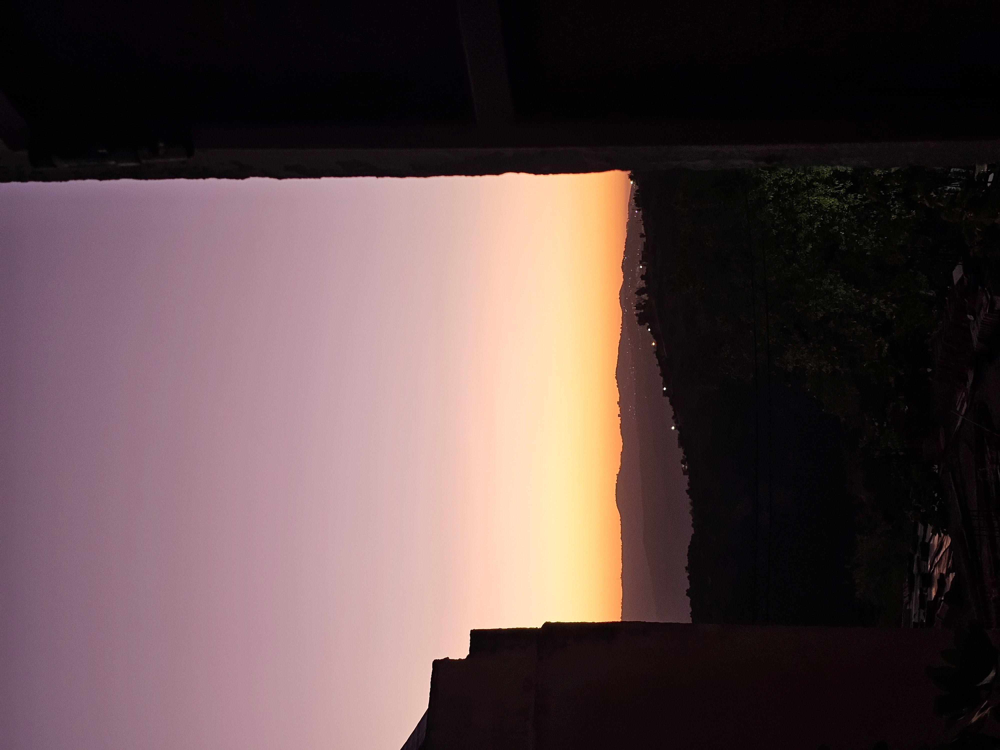

L’aurore du crépuscule
J’ai longtemps marché
une fleur entre les mains,
sans comprendre
qu’elle cachait des épines.
J’ai pris
le mirage pour une source,
le chant pour une promesse,
la lumière pour un refuge,
et je me suis perdu
dans une forêt
qui n’était pas la mienne.
La jeunesse est parfois
un navire sans boussole :
elle confond l’écume avec l’océan
et les tempêtes avec l’aventure.
Puis les années
déposent leurs feuilles mortes
sur les épaules de l’homme,
mais lui apprennent aussi
à reconnaître les vrais chemins.
Aujourd’hui,
je ne cherche plus de grand soleil
ni de jardins extraordinaires.
Je cherche une petite fenêtre allumée
au bout du crépuscule,
une main qui ne serre pas,
un regard qui ne possède pas,
un silence qui ne fait pas peur.
J’ai compris
qu’il n’est jamais trop tard
pour planter une graine
dans la terre des années.
Même lorsque l’hiver
a déjà blanchi les branches,
il reste parfois
un bourgeon caché
qui attend simplement
le retour de la lumière.
Alors je marche encore.
Plus lentement,
certes,
mais avec moins de rêves
et davantage de sagesse.
Et si le bonheur
ne vient pas comme un fleuve,
qu’il vienne comme une goutte de pluie
sur une terre longtemps desséchée.
Je n’ai plus besoin
d’un ciel sans nuages.
Une éclaircie me suffira.
Car après l’erreur de jeunesse,
vient la sagesse du soir…
Et parfois,
pour finir une vie en beauté,
il ne faut pas un bonheur immense.
Il suffit d’un bonheur vrai,
même minuscule,
pour que le crépuscule
ressemble encore
à une aurore.
Djamel Metref
At Yenni le 12 Août 2026
← Tous les poèmes
L’aurore du crépuscule
Résilience et espoir · Beauté du quotidien